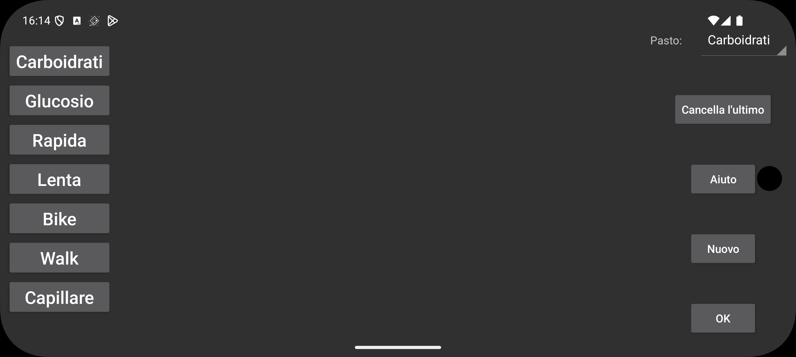

Qui puoi creare, cancellare e modificare le etichette per le quantità aggiunte al grafico per specificare insulina, carboidrati o attività fisica. Se hai già salvato alcune quantità, queste prenderanno l'etichetta corrispondente alla loro posizione. Quindi se dai alla seconda posizione un altro nome, le quantità già salvate specificate con un nome precedente nella seconda posizione prenderanno quel nome.
Per modificare un'etichetta, toccala.
Dopo Pasto, puoi selezionare quale etichetta rappresenta il contenuto di carboidrati dei pasti. Per quell'etichetta in "Nuovo valore" nel menu centrale sinistro viene aggiunto un pulsante Pasto, con il quale puoi specificare un pasto a partire dai suoi ingredienti. La somma dei carboidrati viene quindi salvata sotto questa etichetta e puoi successivamente visualizzare questo pasto selezionando il Pasto di un valore salvato.